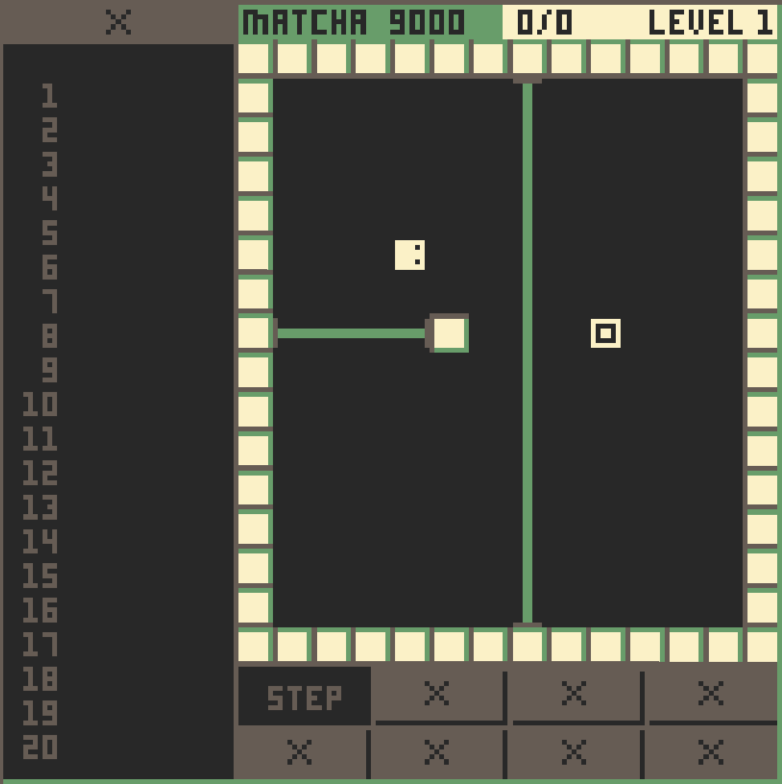

WASM-4 Game Jam: Day 4
Much progress was made today! With 5 days left though, I don't know if I will be able to deliver everything that I want, but we will see.
Most of today was spent doing cleanup, and adding more display elements. In particular, I:
- Added lasers
- A big
Xover the operators that haven't been unlocked yet - An status bar for the number of coins needed to open the exit
I am currently struggling with "making it look good" and "making it work". They both need to happen, but I cannot do both at once. There are a lot of big features which I still need to add, so we will see how things go.
Proof

I was planning on adding a lot levels today, but that is sorta hard when the features of the game haven't been implemented. I spent a lot of today doing that, so hopefully that will be what I do tomorrow.